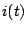
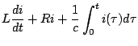
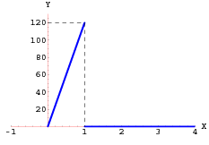
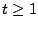
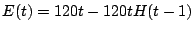
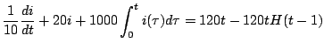
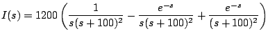

|
|
|
|
|Instituto Tecnológico de Costa Rica|Escuela de Matemática| M. Sc. Geovanni Figueroa M. |
1 2
3 4
5 6 7
8 9
10 11
12 13
14 15 16
|
|
Circuitos L-R-C
En un circuito L-R-C en serie la segunda ley de Kirchhoff establece que la suma de las caídas de tensión a través de un inductor, una resistencia y un capacitor es igual a la tensión aplicada
donde  es la corriente y
De lo anterior obtenemos que la corriente en un circuito como el de la figura 1.13 satisface la ecuación integrodiferencial

la cual podemos resolver aplicando transformada de Laplace.
Ejemplo

Solución
Puesto que la función se anula para , se puede escribir como

con lo cual la ecuación diferencial que modela este circuito es

Y al aplicar la transformada a ambos lados de la ecuación anterior, obtenemos que
de donde obtenemos que

Usando fraciones parciales tenemos que
y al aplicar la transformada inversa
Subsecciones
|